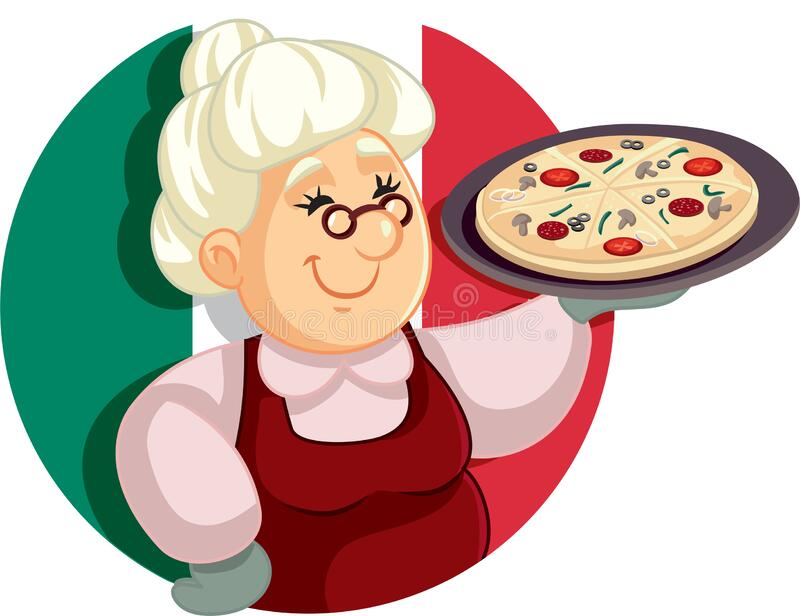

 Bem-vindo ao Bettina, o seu destino para uma autêntica experiência italiana! Localizado no coração da cidade, o nosso restaurante é um lugar acolhedor e aconchegante, onde você pode desfrutar de pratos deliciosos inspirados na cozinha italiana tradicional. No Bettina, usamos apenas os melhores ingredientes frescos e sazonais, combinados com receitas transmitidas de geração em geração, para criar pratos saborosos que vão deixar você com água na boca. Desde massas caseiras até pizzas crocantes, nossos pratos são preparados com amor e dedicação, para que você possa desfrutar de uma verdadeira experiência gastronômica italiana. Nosso ambiente é acolhedor e descontraído, perfeito para uma noite romântica a dois, um jantar em família ou uma refeição com amigos. Nossa equipe está sempre à disposição para ajudar e aconselhar sobre o melhor vinho para acompanhar sua refeição. No Bettina, nossa missão é oferecer a você uma experiência gastronômica autêntica, com sabores e aromas que irão transportá-lo diretamente para a Itália. Venha nos visitar e descubra o que a cozinha italiana tem de melhor a oferecer!
Hamburger al Formaggio € 20,00
Coscia di Pollo
€ 15,00